Business Skills
- Project Management
- Design Thinking
- Risk Management BNSP certified
- Event Planning & Budgeting
- Organizational Administration & Reporting
- Problem Solving
Bachelor of Management in Telecommunications & Informatics Business Management from Telkom University — communicative, proactive, and target-oriented. Strong interest in business development, public relations, and project management, with hands-on experience designing product marketing strategies, managing digital content, and leading team coordination in campus organizations.
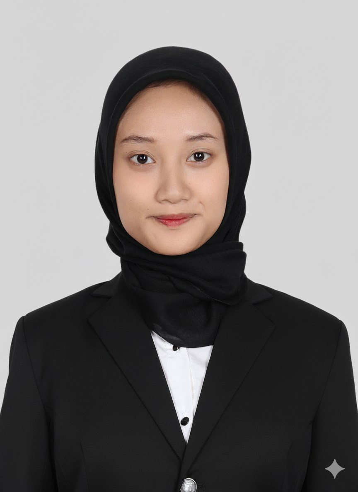
I am a graduate of Business Management in Telecommunications & Informatics from Telkom University. My academic background and practical experience have shaped a communicative, proactive, and target-oriented way of working.
I have real experience designing product marketing strategies, producing and managing digital learning content, and leading team coordination across campus organizations. I am adaptive and ready to contribute to improving partner satisfaction and driving business growth.
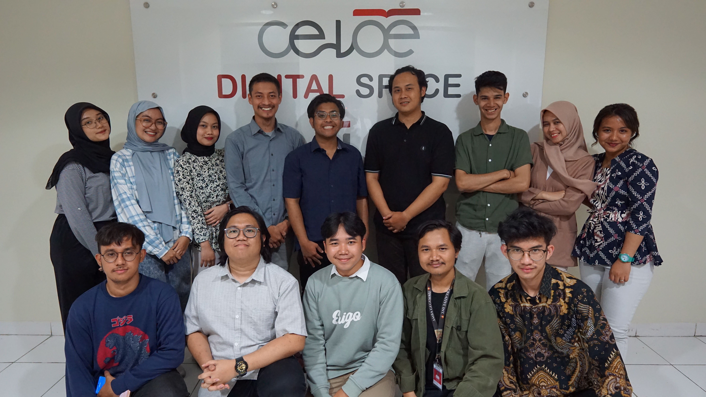
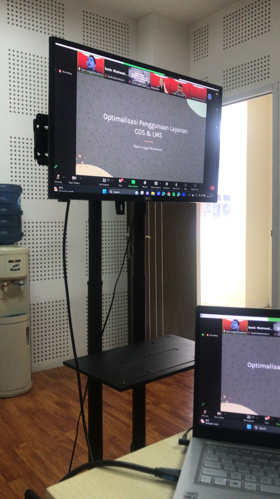
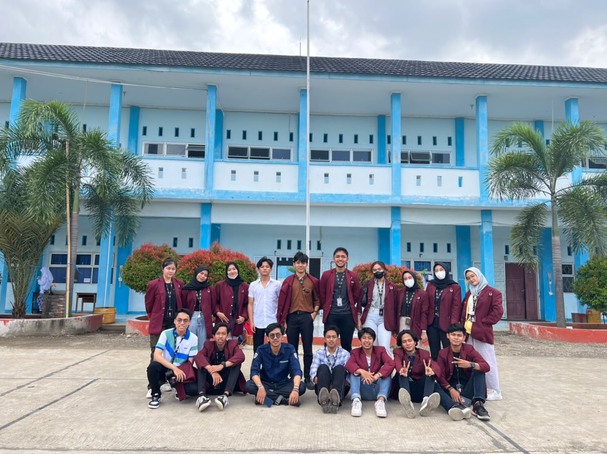
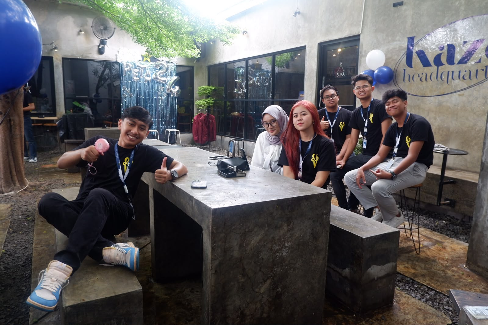
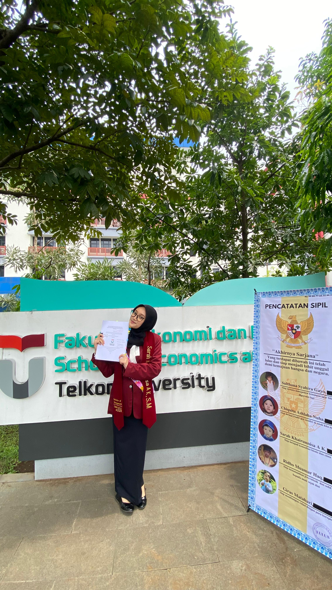
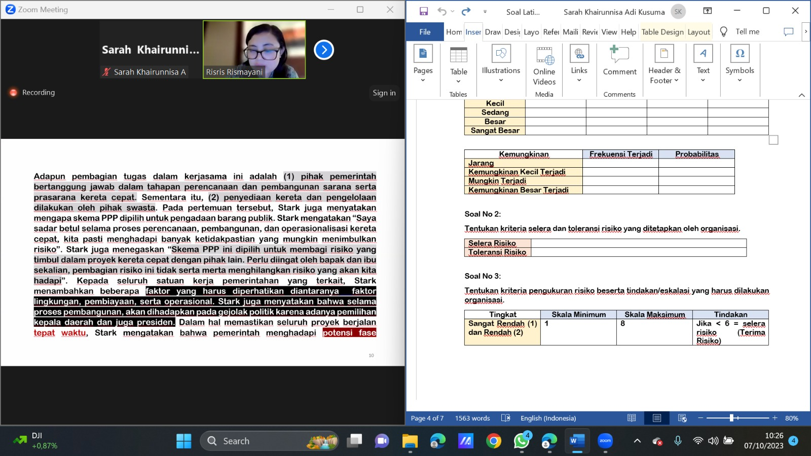
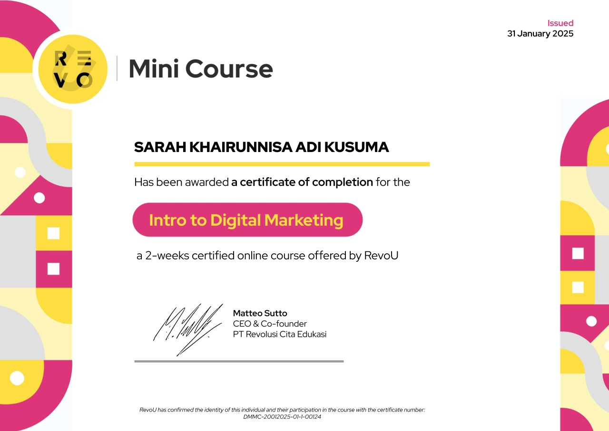
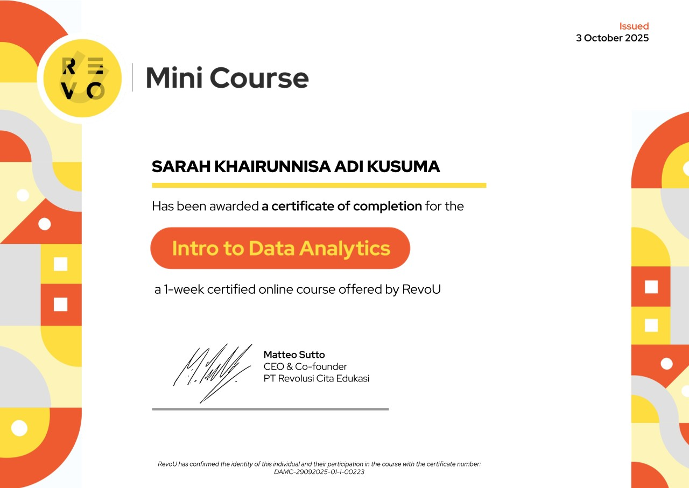
Capabilities and tools listed in my CV, grouped by area of work.
All skills and tools above are taken directly from my CV. No proficiency scores are claimed.
My professional experience and organizational involvement.
CeLOE provides an integrated blended-learning ecosystem based on technology, science, and art.
A community for Telkom University students from Karawang, built to strengthen relationships, togetherness, and solidarity among members.
Telkom University outreach and promotion through roadshows, edufairs, and seminars/webinars.
A program giving students hands-on experience developing innovative business ideas — from planning and production through to marketing.
Bandung, Indonesia
Bachelor of Management
Business Management in Telecommunications & Informatics
Final Project
“Pengaruh Perilaku Keuangan dan Sikap Keuangan Terhadap Keputusan Investasi dengan Literasi Keuangan sebagai Variabel Moderasi”
Courses completed during the programme.
A selection of my academic and professional work. Select a card to see the full detail.
Undergraduate final project examining how financial behavior and financial attitude shape investment decisions, with financial literacy as a moderating variable.
View details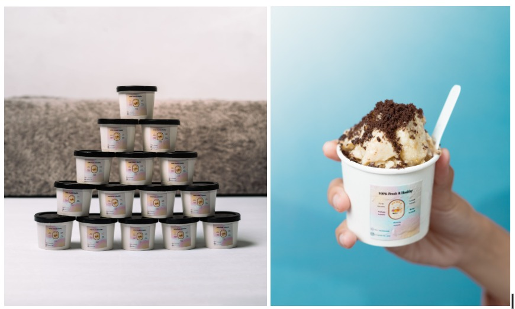
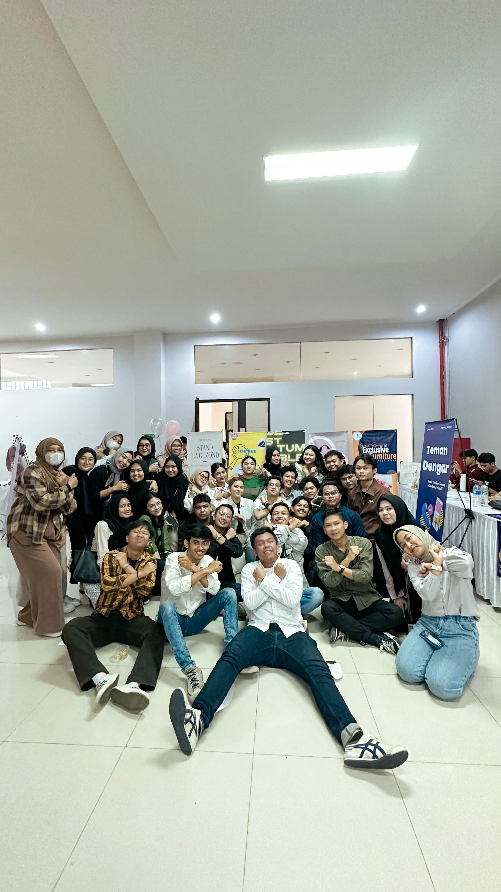
Production, media, and marketing role in a student festival for developing innovative business ideas — from planning and production through to marketing.
View detailsProducing, curating, and scheduling digital learning content on the CeLOE Telkom University e-learning platform to keep the user experience optimal.
View detailsProject documentation is available on request — no public project links are listed in my CV.
Professional certifications completed alongside my degree.
BNSP — Badan Nasional Sertifikasi Profesi
Risk ManagementRevoU
MarketingRevoU
DataOpen to opportunities in business development, business analysis, and digital marketing. Feel free to reach out through any of the channels below.
No public project URL is available — documentation can be shared on request.